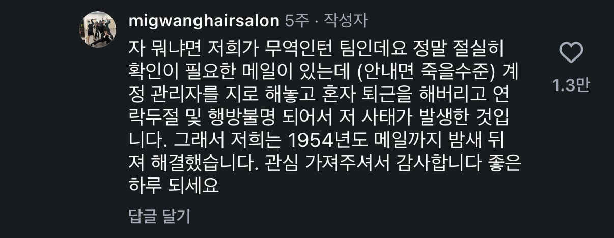

효진이 뭐했을까

효진이 뭐했을까
여자는 어지간하면 손에 폰 붙들고 산다.
맞음 ㅋㅋㅋ 와도 안읽씹 하는거고 내가 관심 있는 사람만 골라서 봄 왜 아냐고 ? 묻지마 ㅋㅋㅋ
쉿 ㅅㅅ 중
그래서 계정관리자는 저 일 이후로 바꾸셨을까요?
이래서 super계정은 정/부로 2인이서 관리해야해
2인이 둘 다 사라졌다고?
효수해
효수야 인증 한 번만 해줘 제발
ㅋㅋㅋㅋㅋㅋㅋㅋㅋㅋㅋㅋㅋㅋ
1954년도에 메일이있어?
에이브러햄 링컨이 쓴 메일 못봄?
걍 개 옛날 메일부터 뒤져봤다는 뜻인듯 ㅋㅋㅋㅋㅋ
이메일이 1970년대 쯤에나 나온걸로 앎
이 편지는 영국에서 최초로 시작되어 일년에 한바퀴를 돌면서 받는 사람에게 행운을 주었고 지금은 당신에게로 옮겨진 이 편지는 4일 안에 당신 곁을 떠나야 합니다. 이 편지를 포함해서 7통을 행운이 필요한 사람에게 보내 주셔야 합니다. 복사를 해도 좋습니다. 혹 미신이라 하실지 모르지만 사실입니다.
영국에서 HGXWCH이라는 사람은 1930년에 이 편지를 받았습니다. 그는 비서에게 복사해서 보내라고 했습니다. 며칠 뒤에 복권이 당첨되어 20억을 받았습니다. 어떤 이는 이 편지를 받았으나 96시간 이내 자신의 손에서 떠나야 한다는 사실을 잊었습니다. 그는 곧 사직되었습니다. 나중에야 이 사실을 알고 7통의 편지를 보냈는데 다시 좋은 직장을 얻었습니다. 미국의 케네디 대통령은 이 편지를 받았지만 그냥 버렸습니다. 결국 9일 후 그는 암살당했습니다. 기억해 주세요. 이 편지를 보내면 7년의 행운이 있을 것이고 그렇지 않으면 3년의 불행이 있을 것입니다. 그리고 이 편지를 버리거나 낙서를 해서는 절대로 안됩니다. 7통입니다. 이 편지를 받은 사람은 행운이 깃들 것입니다. 힘들겠지만 좋은 게 좋다고 생각하세요.
그래서 효진이 죽음 살음?
광 팔았대.
ai같은데 구도가 어색하냐
카톡이나 전화가 저정도로오면 받기싫어도 한번은 받겠다
인턴으로 좋은 경험 하네
iam 조직관리 안함?
걍 투폰쓰는거임 저정도면 회사에 폰 두고다닐듯
투폰백퍼 ㅋㅋ
5팀 박나현님 58제발요가 뭐임
오 씨팔
오
인턴인거 보니 바로 계약 종료네
저정도 폐급이면 업계 소문 다 나서 중견까진 취업 불가일듯
대학 내 인턴십 프로그램일가임
저정도면 시말서각 아닌가
저런권한이 왜 인턴?한테 있는거지
왜 자기한테 권한을 부여할 수 있었던걸까
대학 내 인턴십
정말 중요한 메일을 인턴따리가 확인해야 처리되도록 맡긴거자체가 잘못된거아님?
grep 저거 아직도 하네 거의 나라돈 빼먹는 수준인데 ㅋㅋ
gtep아님?
회사 시스템이 개판이네 인턴한테 왜 관리자 변경 가능한 권한을 줘
미광헤어살롱?